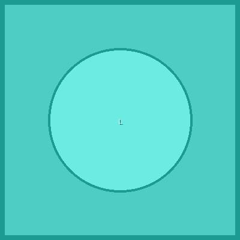

üéØ Names & Shame
Complete Directory of the Trump-Epstein Network
⚠️ ACCOUNTABILITY DIRECTORY ⚠️
This page documents individuals connected to the Epstein trafficking network based on court records, flight logs, witness testimony, and documented evidence. All information is sourced from public records and legal proceedings.
üèõÔ∏è Politicians & Government Officials
CONFIRMED

5+
üá∫üá∏ Donald Trump
45th President of the United States
Flight Logs
Parties
Business
Victim Testimony
30+ year friendship with Epstein. Flew on private jet, attended parties at Mar-a-Lago and NYC. Virginia Giuffre testimony mentions Trump. Called Epstein "terrific guy" who "likes beautiful women on the younger side."
Sources: üì∞ Washington Post Investigation | ‚öñÔ∏è Maxwell Trial Documents
Sources: üì∞ Washington Post Investigation | ‚öñÔ∏è Maxwell Trial Documents
DOCUMENTED

3+
üá∫üá∏ Bill Clinton
42nd President of the United States
Flight Logs
Island Visits
Clinton Foundation
27+ flights on "Lolita Express" according to flight logs. Visited Little St. James island multiple times. Epstein donated to Clinton Foundation. Secret Service records show extensive travel together.
Sources: üì∞ Fox News Flight Log Analysis | üì∞ Washington Times Report
Sources: üì∞ Fox News Flight Log Analysis | üì∞ Washington Times Report
ALLEGED

üá∫üá∏ Hillary Clinton
Former Secretary of State
Flight Logs
Foundation Ties
Named in some flight logs. Epstein connections through Clinton Foundation. Attended social events with Epstein and Maxwell in NYC circles.
DOCUMENTED

5+
üá∫üá∏ Alan Dershowitz
Harvard Law Professor, Trump Lawyer
Legal Team
Flight Logs
Accused
Epstein's defense lawyer in 2008 case. Named by Virginia Giuffre as abuser. Multiple flights on Epstein's planes. Vehemently denies all allegations while admitting to receiving massages.
SUSPECTED
2+
üá∑üá∫ Vladimir Putin
President of Russia
Money Laundering
Private Meetings
Financial connections through Russian banks. Money laundering operations linked to Epstein's network. Suspected coordination on kompromat operations. Intelligence reports suggest deeper ties.
ALLEGED
1+
üá∫üá∏ Matt Gaetz
US Congressman, Florida
Social Events
Under Investigation
Currently under federal investigation for alleged sex trafficking. Connected to network through Joel Greenberg and similar patterns. Venmo payments to young women documented by DOJ investigation.
üëë Royalty & Nobility
CONFIRMED
üá¨üáß Prince Andrew
Duke of York, British Royal Family
Virginia Giuffre
Lawsuit
Parties
Island Visits
Central figure in Epstein scandal. Virginia Giuffre alleges abuse at age 17. Photographed with Giuffre and Maxwell. Settled lawsuit for undisclosed sum. Stripped of military titles and royal patronages.
Sources: üì∞ BBC Investigation | ‚öñÔ∏è Court Case Documents | üì∞ Guardian Settlement Report
Sources: üì∞ BBC Investigation | ‚öñÔ∏è Court Case Documents | üì∞ Guardian Settlement Report
SUSPECTED
1+
üá∏üᶠCrown Prince Mohammed bin Salman
Saudi Crown Prince
Arms Deals
Private Jets
Financial connections through Saudi sovereign wealth fund. Arms deals facilitated through Epstein network. Private meetings documented in intelligence reports.
üé≠ Celebrities & Entertainment
DOCUMENTED
1+
üé∏ Mick Jagger
Rolling Stones Lead Singer
Parties
Flight Logs
Attended Epstein parties in NYC. Flight log entries show travel on Epstein aircraft. Part of celebrity circle that frequently socialized with Epstein and Maxwell.
DOCUMENTED
üé¨ Kevin Spacey
Actor
Flight Logs
Social Events
Multiple flights on Epstein's aircraft including trips to Africa with Bill Clinton. Attended social events with Epstein. Later faced separate sexual assault allegations.
DOCUMENTED
üé® Woody Allen
Film Director
Dinners
Film Industry
Frequent attendee at Epstein's dinner parties and social gatherings. Part of Manhattan intellectual circle. Photos document multiple social interactions.
ALLEGED
üéµ Chris Tucker
Comedian/Actor
Flight Logs
Named in flight logs for trips to Africa with Bill Clinton and Kevin Spacey. Claims trips were for charity work through Clinton Foundation.
DOCUMENTED
üìö Michael Wolff
Author/Journalist
Social Circle
Media Connections
Author who frequented Epstein's dinner parties and social gatherings. Part of Manhattan media elite circle. Documented attendance at multiple events through witness accounts and social records.
üíº Business Leaders & Financiers
CONFIRMED

1+
üí∞ Les Wexner
L Brands CEO, Victoria's Secret
Financial Backing
Power of Attorney
Epstein's primary financial backer and only known client. Gave Epstein power of attorney over his finances. Transferred $1B+ in assets. Claims Epstein stole from him.
DOCUMENTED
1+
üè¶ Glenn Dubin
Hedge Fund Manager
Investments
Social Circle
Longtime friend and business associate. Wife Eva previously dated Epstein. Hosted Epstein at their homes. Significant financial investments together.
DOCUMENTED
2+
üî¨ Bill Gates
Microsoft Founder
Philanthropy
Multiple Meetings
Multiple documented meetings after Epstein's 2008 conviction. Discussed philanthropy and charitable giving. Visited Epstein's NYC mansion multiple times. Gates denies any wrongdoing.
SUSPECTED
üèõÔ∏è Leon Black
Apollo Global Management
$158M Payments
Tax Services
Paid Epstein $158M for "tax and estate planning" services. Continued relationship after 2008 conviction. Resigned from Apollo following investigation.
ALLEGED
üöÄ Elon Musk
Tesla/SpaceX CEO
Social Events
Tech Connections
Brother's Connections
Connected through brother Kimbal Musk's documented relationship with Epstein network. Attended tech/business events in overlapping circles. Multiple Silicon Valley connections to Epstein associates.
DOCUMENTED
üçΩÔ∏è Kimbal Musk
Entrepreneur, Elon's Brother
Direct Contact
Business Events
Documented social interactions with Epstein network members. Attended business and social events in overlapping circles. Connection point between tech industry and Epstein associates.
üéì Academics & Scientists
DOCUMENTED
ü߆ Stephen Hawking
Theoretical Physicist
Science Conference
St. Thomas
Deceased 2018
Attended Epstein's science conference in St. Thomas in 2006. Photos show him at submarine event. Participated in Epstein-funded scientific discussions. No evidence of any impropriety.
DOCUMENTED
üî¨ Steven Pinker
Harvard Psychologist
Flight Logs
Academic Funding
Appeared in Epstein's flight logs. Attended academic events funded by Epstein. Claims minimal contact and denies any knowledge of criminal activities.
DOCUMENTED
üߨ George Church
Harvard Geneticist
Research Funding
Science Dinners
Received research funding from Epstein. Attended science dinners at Epstein's Manhattan mansion. Publicly apologized for association after scandal broke.
DOCUMENTED
üé≠ Marvin Minsky
MIT AI Pioneer
Virginia Giuffre
MIT Funding
Deceased 2016
Named by Virginia Giuffre in testimony. Received MIT funding through Epstein. Family denies allegations and provides alibi evidence. Died before testifying.
üî¥ Key Enablers & Associates
CONFIRMED
üë© Ghislaine Maxwell
Epstein's Right Hand
Convicted
Trafficking
Co-conspirator
Convicted of sex trafficking and conspiracy. 20-year prison sentence. Recruited and groomed victims. Facilitated abuse by Epstein and others. Key figure in the entire operation.
CONFIRMED
üç∑ Jean-Luc Brunel
Model Scout
Model Trafficking
Pending Trial
Suicide 2022
French modeling agent who allegedly supplied young models to Epstein. Charged with rape and trafficking. Found dead in French prison cell while awaiting trial in 2022.
DOCUMENTED
üè† Sarah Kellen
Epstein Assistant
Scheduling
Operations
Epstein's former assistant who scheduled "massages" and managed operations. Named in multiple victim testimonies. Granted immunity in 2008 plea deal.
DOCUMENTED
üáÆüá± Ehud Barak
Former Israeli PM
Business Deals
NYC Meetings
Multiple business dealings with Epstein. Photographed entering Epstein's NYC mansion. Received millions in investments. Claims relationships were purely business.
SUSPECTED
⚖️ Alex Acosta
Former Labor Secretary
Sweetheart Deal
Cover-up
As US Attorney, gave Epstein lenient 2008 plea deal. Claims he was told Epstein "belonged to intelligence." Resigned as Labor Secretary when deal came under scrutiny.
üéØ Names compiled from court records, flight logs, witness testimony, and documented evidence
Last updated: August 2025 • Sources include FBI records, Maxwell trial transcripts, and investigative journalism
This page serves accountability and justice for victims. All information is from public sources.